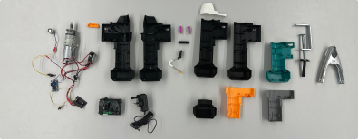
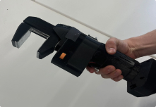
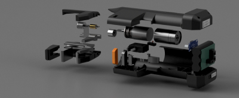

An ergonomic tool addressing hand strain and mobility issues in rigorous environments.
Overview
This tool employs an electromagnetic clamp and motorised worm gear mechanism, facilitating repeated use while providing rapid and secure clamping.
Durability and ease of use are enhanced through high-quality materials, an ergonomic design, and custom-cast metal parts, making the tool reliable even in rigorous environments.
Key Features
Electromagnetic clamps for rapid and secure clamping.
Motorised worm gear mechanism for enhanced durability.
Custom-cast metal parts for longevity and reliability.
Ergonomic design to reduce hand strain during prolonged use.
Gallery



Development Process
The development process comprehensively considered the entire lifecycle from production to disposal, incorporating compliance standards, assembly processes, and cost estimation.
A human-centred design approach was maintained throughout, with consistent problem identification and user group feedback informing the definition of tool requirements and production processes.